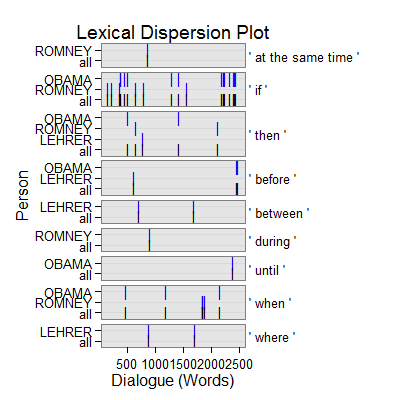

dc_equality(text.var, grouping.var, n.before = 1, tot = FALSE, n.after = n.before, ord.inds = TRUE, markup = c("<<", ">>"), name = "equality", ...)dc_equality_sub(text.var, grouping.var, n.before = 1, tot = FALSE, n.after = n.before, ord.inds = TRUE, markup = c("<<", ">>"), name = "equality_sub", ...)
TRUE condenses sub-units (e.g., sentences)
into turns of talk for that grouping.var.TRUE inds is ordered least to greatest.c("", "") to not mark the equality discourse
markers.termco.dc_equality - Returns returns a list of 2:
countsA termco object of equality discourse connector counts.
equalityA trans_context object of equality discourse connectors in context.
dc_equality_sub - Returns returns a list of 4:
countsA termco object of equality discourse connector counts.
noneA trans_context object of equality discourse connectors in context that are not continuation or elaboration.
continuationA trans_context object of continuation equality discourse connectors in context.
elaborationA trans_context object of elaboration equality discourse connectors in context.
dc_equality - Extract equality discourse connectors in context.
dc_equality_sub - Extract equality discourse connectors in context typified as
continuation or elaboration.
Alemany, L. A. (2005). Representing discourse for automatic text summarization via shallow NLP techniques (Unpublished doctoral dissertation). Universitat de Barcelona, Barcelona.
http://russell.famaf.unc.edu.ar/~laura/shallowdisc4summ/discmar
with(pres_debates2012[1:200, ], dc_equality(dialogue, person))$counts person word.count equality 1 OBAMA 943 22(2.33%) 2 ROMNEY 1349 13(.96%) 3 LEHRER 316 6(1.90%) $equality =================================== Event 1: [lines 1-2] ** LEHRER: We'll talk about <<specifically>> about health care in a moment. LEHRER: But what do you support the voucher system, Governor? =================================== Event 2: [lines 12-14] ROMNEY: They'll have at least two plans. ** ROMNEY: And <<by the way>>, if the government can be as efficient as the private sector and offer premiums that are as low as the private sector, people will be happy to get traditional Medicare or they'll be able to get a private plan. ROMNEY: I know my own view is I'd rather have a private plan. =================================== Event 3: [lines 22-24] ROMNEY: That's the plan that I've put forward. ** ROMNEY: And, <<by the way>> the idea came not <<even>> from Paul Ryan or or Senator Wyden, who's the co author of the bill with with Paul Ryan in the Senate, <<but also>> it came from Bill Bill Clinton's chief of staff. ROMNEY: This is an idea that's been around a long time, which is saying, hey, let's see if we can't get competition into the Medicare world so that people can get the choice of different plans at lower cost, better quality. =================================== Event 4: [lines 109-111] OBAMA: You had credit agencies that were stamping these as Aone great investments when they weren't. ** OBAMA: But you <<also>> had banks making money hand over fist, churning out products that the bankers themselves didn't <<even>> understand, in order to make big profits, but knowing that it made the entire system vulnerable. OBAMA: So what did we do? =================================== Event 5: [lines 115-117] OBAMA: We've going to make sure that you've got to have a living will so so we can know how you're going to wind things down if you make a bad bet so we don't have other taxpayer bailouts. ** OBAMA: In the meantime, <<by the way>>, we <<also>> made sure that all the help that we provided those banks was paid back every single dime, with interest. OBAMA: Now, Governor Romney has said he wants to repeal Dodd Frank. =================================== Event 6: [lines 177-179] OBAMA: Well, four years ago, when I was running for office, I was traveling around and having those same conversations that Governor Romney talks about. ** OBAMA: And it wasn't just that small businesses were seeing costs skyrocket and they couldn't get affordable coverage <<even>> if they wanted to provide it to their employees. OBAMA: It wasn't just that this was the biggest driver of our federal deficit, our overall health care costs, but it was families who were worried about going bankrupt if they got sick, millions of families, all across the country. =================================== Event 7: [lines 190-192] OBAMA: They have to let you keep your kid on their insurance your insurance plan until you're twenty six years old. ** OBAMA: And it <<also>> says that you're going to have to get rebates if insurance companies are spending more on administrative costs and profits than they are on actual care. OBAMA: Number two, if you don't have health insurance, we're essentially setting up a group plan that allows you to benefit from group rates that are typically eighteen percent lower than if you're out there trying to get insurance on the individual market. =================================== Event 8: [lines 191-193] OBAMA: And it also says that you're going to have to get rebates if insurance companies are spending more on administrative costs and profits than they are on actual care. ** OBAMA: Number two, if you don't have health insurance, we're <<essentially>> setting up a group plan that allows you to benefit from group rates that are typically eighteen percent lower than if you're out there trying to get insurance on the individual market. OBAMA: Now, the last point I'd make before| =================================== Event 9: [lines 194-196] LEHRER: Two minutes two minutes is up, sir. ** OBAMA: No, I think I had five seconds before you interrupted me, was the irony is that we've seen this model work really well in Massachusetts, because Governor Romney did a good thing, working with Democrats in the state to set up what is <<essentially>> the identical model and as a consequence people are covered there. OBAMA: It hasn't destroyed jobs.out <- with(pres_debates2012[1:200, ], dc_equality_sub(dialogue, person)) out[1]$counts person word.count none continuation elaboration 1 OBAMA 943 16(1.70%) 2(.21%) 4(.42%) 2 ROMNEY 1349 9(.67%) 0 4(.30%) 3 LEHRER 316 1(.32%) 3(.95%) 2(.63%)out[2]$none =================================== Event 1: [lines 12-14] ROMNEY: They'll have at least two plans. ** ROMNEY: And by the way, <<if>> the government can be as efficient as the private sector and offer premiums that are as low as the private sector, people will be happy to get traditional Medicare or they'll be able to get a private plan. ROMNEY: I know my own view is I'd rather have a private plan. =================================== Event 2: [lines 16-18] ROMNEY: I'd rather be able to have an insurance company. ** ROMNEY: <<If>> I don't like them, I can get rid of them and find a different insurance company. ROMNEY: But people make their own choice. =================================== Event 3: [lines 23-25] ROMNEY: And, by the way the idea came not even from Paul Ryan or or Senator Wyden, who's the co author of the bill with with Paul Ryan in the Senate, but also it came from Bill Bill Clinton's chief of staff. ** ROMNEY: This is an idea that's been around a long time, which is saying, hey, let's see <<if>> we can't get competition into the Medicare world so that people can get the choice of different plans at lower cost, better quality. ROMNEY: I believe in competition. =================================== Event 4: [lines 25-27] ROMNEY: I believe in competition. ** OBAMA: Jim, <<if>> I <<if>> I can just respond very quickly, first of all, every study has shown that Medicare has lower administrative costs than private insurance does, which is why seniors are generally pretty happy with it. OBAMA: And private insurers have to make a profit. =================================== Event 5: [lines 30-32] OBAMA: And so you've got higher administrative costs, plus profit on top of that. ** OBAMA: And <<if>> you are going to save any money through what Governor Romney's proposing, what has to happen is, is that the money has to come from somewhere. OBAMA: And when you move to a voucher system, you are putting seniors at the mercy of those insurance companies. =================================== Event 6: [lines 32-34] OBAMA: And when you move to a voucher system, you are putting seniors at the mercy of those insurance companies. ** OBAMA: And over time, <<if>> traditional Medicare has decayed or fallen apart, <<then>> they're stuck. OBAMA: And this is the reason why AARP has said that your plan would weaken Medicare substantially. =================================== Event 7: [lines 52-54] LEHRER: All right. ** ROMNEY: <<If>> that's the case, <<then>> it will always be the best product that people can purchase. LEHRER: Wait a minute, Governor. =================================== Event 8: [lines 67-69] LEHRER: This is not a new two minute segment to start. ** LEHRER: And we'll go for a few minutes, and <<then>> we're going to go to health care, OK? ROMNEY: Regulation is essential. =================================== Event 9: [lines 69-71] ROMNEY: Regulation is essential. ** ROMNEY: You can't have a free market work <<if>> you don't have regulation. ROMNEY: As a businessperson, I had to have I need to know the regulations. =================================== Event 10: [lines 75-77] ROMNEY: Every free economy has good regulation. ** ROMNEY: <<At the same time>>, regulation can become excessive. LEHRER: Is it excessive now, do you think? =================================== Event 11: [lines 114-116] OBAMA: You can't engage in some of this risky behavior that is putting Main Street at risk. ** OBAMA: We've going to make sure that you've got to have a living will so so we can know how you're going to wind things down <<if>> you make a bad bet so we don't have other taxpayer bailouts. OBAMA: In the meantime, by the way, we also made sure that all the help that we provided those banks was paid back every single dime, with interest. =================================== Event 12: [lines 120-122] OBAMA: And so the question is: Does anybody out there think that the big problem we had is that there was too much oversight and regulation of Wall Street? ** OBAMA: Because <<if>> you do, <<then>> Governor Romney is your candidate. OBAMA: But that's not what I believe. =================================== Event 13: [lines 134-136] ROMNEY: It's one of the reasons for the great financial calamity we had. ** ROMNEY: And so Dodd Frank correctly says we need to have qualified mortgages, and <<if>> you give a mortgage that's not qualified, there are big penalties, except they didn't ever go on and define what a qualified mortgage was. ROMNEY: It's been two years. =================================== Event 14: [lines 174-176] ROMNEY: And the best course for health care is to do what we did in my state: craft a plan at the state level that fits the needs of the state. ** ROMNEY: And <<then>> let's focus on getting the costs down for people, rather than raising it with the dollar two thousand five hundred additional premium. LEHRER: Mister President, the argument against repeal? =================================== Event 15: [lines 177-179] OBAMA: Well, four years ago, when I was running for office, I was traveling around and having those same conversations that Governor Romney talks about. ** OBAMA: And it wasn't just that small businesses were seeing costs skyrocket and they couldn't get affordable coverage even <<if>> they wanted to provide it to their employees. OBAMA: It wasn't just that this was the biggest driver of our federal deficit, our overall health care costs, but it was families who were worried about going bankrupt if they got sick, millions of families, all across the country. =================================== Event 16: [lines 178-180] OBAMA: And it wasn't just that small businesses were seeing costs skyrocket and they couldn't get affordable coverage even if they wanted to provide it to their employees. ** OBAMA: It wasn't just that this was the biggest driver of our federal deficit, our overall health care costs, but it was families who were worried about going bankrupt <<if>> they got sick, millions of families, all across the country. OBAMA: If they had a pre existing condition, they might not be able to get coverage at all. =================================== Event 17: [lines 179-181] OBAMA: It wasn't just that this was the biggest driver of our federal deficit, our overall health care costs, but it was families who were worried about going bankrupt if they got sick, millions of families, all across the country. ** OBAMA: <<If>> they had a pre existing condition, they might not be able to get coverage at all. OBAMA: If they did have coverage, insurance companies might impose an arbitrary limit. =================================== Event 18: [lines 180-182] OBAMA: If they had a pre existing condition, they might not be able to get coverage at all. ** OBAMA: <<If>> they did have coverage, insurance companies might impose an arbitrary limit. OBAMA: And so as a consequence, they're paying their premiums, somebody gets really sick, lo and behold, they don't have enough money to pay the bills, because the insurance companies say that they've hit the limit. =================================== Event 19: [lines 184-186] OBAMA: And let me tell you exactly what Obamacare did. ** OBAMA: Number one, <<if>> you've got health insurance, it doesn't mean a government takeover. OBAMA: You keep your own insurance. =================================== Event 20: [lines 190-192] OBAMA: They have to let you keep your kid on their insurance your insurance plan until you're twenty six years old. ** OBAMA: And it also says that you're going to have to get rebates <<if>> insurance companies are spending more on administrative costs and profits than they are on actual care. OBAMA: Number two, if you don't have health insurance, we're essentially setting up a group plan that allows you to benefit from group rates that are typically eighteen percent lower than if you're out there trying to get insurance on the individual market. =================================== Event 21: [lines 191-193] OBAMA: And it also says that you're going to have to get rebates if insurance companies are spending more on administrative costs and profits than they are on actual care. ** OBAMA: Number two, <<if>> you don't have health insurance, we're essentially setting up a group plan that allows you to benefit from group rates that are typically eighteen percent lower than <<if>> you're out there trying to get insurance on the individual market. OBAMA: Now, the last point I'd make before|out[3]$continuation =================================== Event 1: [lines 48-50] ROMNEY: Let's get back to Medicare. ** LEHRER: <<before>> we leave the economy| ROMNEY: Let's get back to Medicare. =================================== Event 2: [lines 56-58] LEHRER: All right. ** LEHRER: Can we can the two of you agree that the voters have a choice a clear choice <<between>> the two| ROMNEY: Absolutely. =================================== Event 3: [lines 144-146] LEHRER: All right. ** LEHRER: I think we have another clear difference <<between>> the two of you. LEHRER: Now, let's move to health care where I know there is a clear difference, and that has to do with the Affordable Care Act, Obamacare. =================================== Event 4: [lines 192-194] OBAMA: Number two, if you don't have health insurance, we're essentially setting up a group plan that allows you to benefit from group rates that are typically eighteen percent lower than if you're out there trying to get insurance on the individual market. ** OBAMA: Now, the last point I'd make <<before>>| LEHRER: Two minutes two minutes is up, sir. =================================== Event 5: [lines 194-196] LEHRER: Two minutes two minutes is up, sir. ** OBAMA: No, I think I had five seconds <<before>> you interrupted me, was the irony is that we've seen this model work really well in Massachusetts, because Governor Romney did a good thing, working with Democrats in the state to set up what is essentially the identical model and as a consequence people are covered there. OBAMA: It hasn't destroyed jobs.out[4]$elaboration =================================== Event 1: [lines 31-33] OBAMA: And if you are going to save any money through what Governor Romney's proposing, what has to happen is, is that the money has to come from somewhere. ** OBAMA: And <<when>> you move to a voucher system, you are putting seniors at the mercy of those insurance companies. OBAMA: And over time, if traditional Medicare has decayed or fallen apart, then they're stuck. =================================== Event 2: [lines 79-81] ROMNEY: Other places, no. ** LEHRER: Like <<where>>? ROMNEY: No, it can become out of date. =================================== Event 3: [lines 81-83] ROMNEY: No, it can become out of date. ** ROMNEY: And what's happened with some of the legislation that's been passed <<during>> the president's term, you've seen regulation become excessive, and it's hurt it's hurt the economy. ROMNEY: Let me give you an example. =================================== Event 4: [lines 108-110] OBAMA: You had people who were borrowing money to buy a house that they couldn't afford. ** OBAMA: You had credit agencies that were stamping these as Aone great investments <<when>> they weren't. OBAMA: But you also had banks making money hand over fist, churning out products that the bankers themselves didn't even understand, in order to make big profits, but knowing that it made the entire system vulnerable. =================================== Event 5: [lines 145-147] LEHRER: I think we have another clear difference between the two of you. ** LEHRER: Now, let's move to health care <<where>> I know there is a clear difference, and that has to do with the Affordable Care Act, Obamacare. LEHRER: And it's a two minute new new segment, and that means two minutes each. =================================== Event 6: [lines 158-160] ROMNEY: And and we've got to deal with cost. ** ROMNEY: And, unfortunately, <<when>> <<when>> <<when>> you look at Obamacare, the Congressional Budget Office has said it will cost dollar two thousand five hundred a year more than traditional insurance. ROMNEY: So it's adding to cost. =================================== Event 7: [lines 160-162] ROMNEY: So it's adding to cost. ** ROMNEY: And as a matter of fact, <<when>> the president ran for office, he said that, by this year, he would have brought down the cost of insurance for each family by dollar two thousand five hundred a family. ROMNEY: Instead, it's gone up by that amount. =================================== Event 8: [lines 176-178] LEHRER: Mister President, the argument against repeal? ** OBAMA: Well, four years ago, <<when>> I was running for office, I was traveling around and having those same conversations that Governor Romney talks about. OBAMA: And it wasn't just that small businesses were seeing costs skyrocket and they couldn't get affordable coverage even if they wanted to provide it to their employees. =================================== Event 9: [lines 189-191] OBAMA: They can't impose arbitrary lifetime limits. ** OBAMA: They have to let you keep your kid on their insurance your insurance plan <<until>> you're twenty six years old. OBAMA: And it also says that you're going to have to get rebates if insurance companies are spending more on administrative costs and profits than they are on actual care.plot(out)
## Save externally use .doc or .txt ## print(out[[3]], file="elaboration_equality.doc")